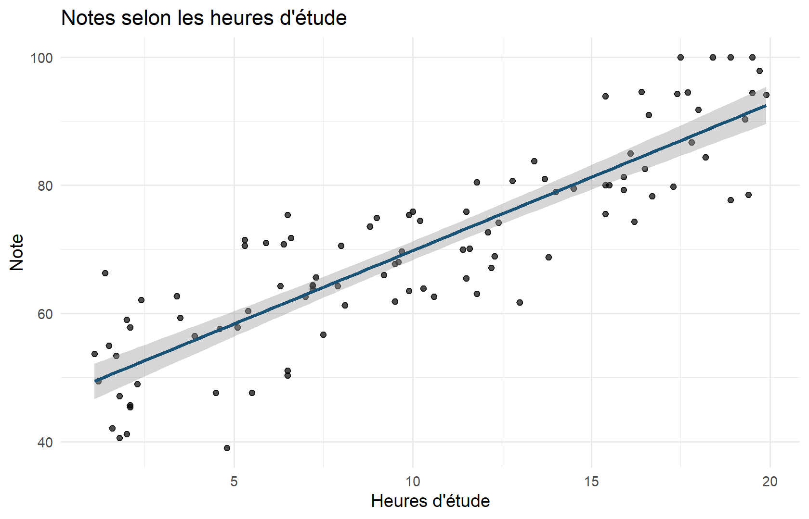
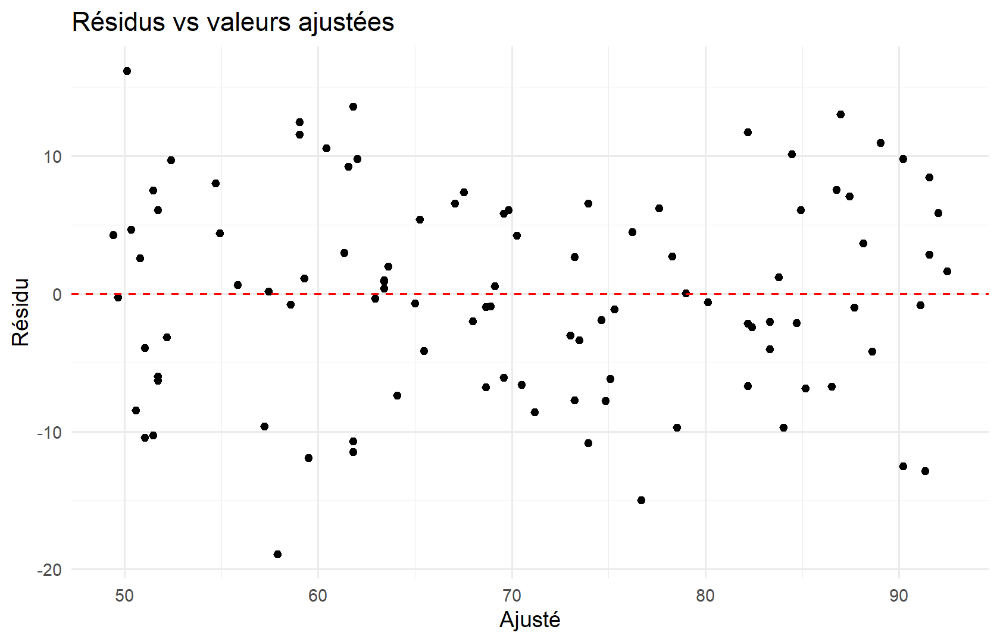
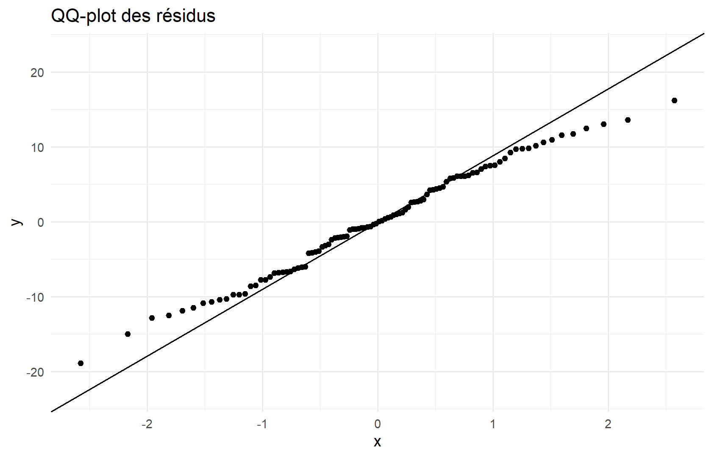
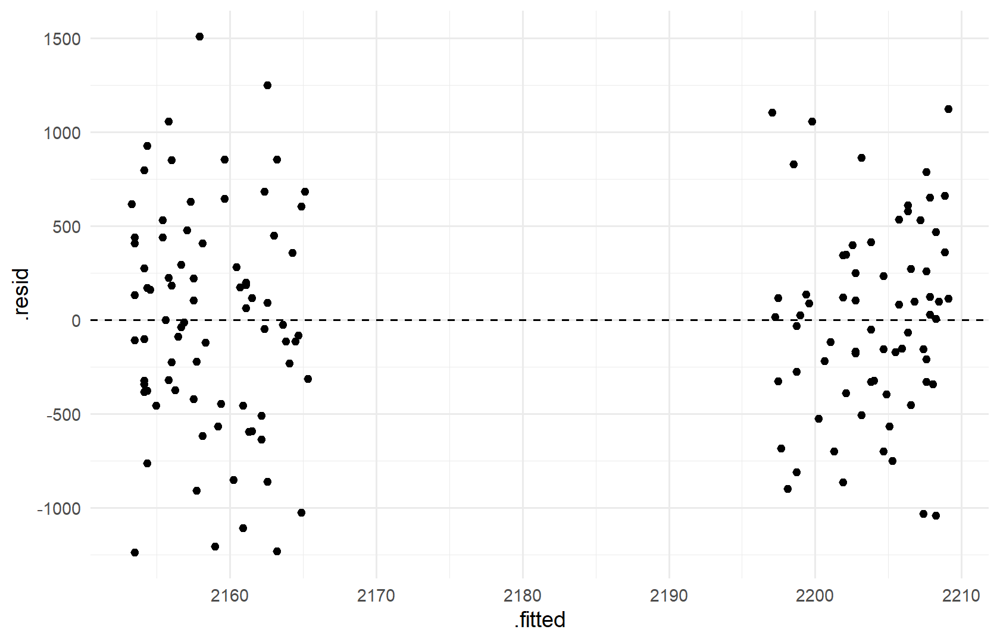

library(tidyverse)
library(broom)
etudes <- read_csv("data/etudes_notes.csv", show_col_types = FALSE)
demo <- read_csv("data/demographie.csv", show_col_types = FALSE) |>
filter(age <= 100, revenu_mensuel < 20000)8 Analyse statistique et modélisation
8.1 Introduction
La statistique inférentielle cherche à tirer des conclusions sur une population à partir d’un échantillon, en quantifiant l’incertitude. Ce chapitre introduit population/échantillon, intervalles de confiance, tests d’hypothèses, corrélation, régression linéaire et ses limites — notamment la distinction corrélation / causalité.
8.2 Objectifs pédagogiques
- Distinguer description et inférence
- Interpréter un intervalle de confiance et une p-valeur avec prudence
- Comparer des moyennes
- Ajuster et diagnostiquer une régression linéaire
- Évaluer les performances et les limites d’un modèle
8.3 Prérequis
Chapter 6 et Chapter 7. Package broom.
8.4 Population et échantillon
- Population : ensemble cible (tous les clients, tous les étudiants…)
- Échantillon : sous-ensemble observé
- Paramètre : caractéristique de la population (souvent inconnue)
- Statistique : caractéristique calculée sur l’échantillon
Vocabulaire
- Estimateur : règle de calcul (ex. moyenne empirique)
- Biais : erreur systématique
- Variance d’échantillonnage : variabilité d’un estimateur entre échantillons
8.5 Variables quantitatives et qualitatives
| Type | Exemples | Analyses typiques |
|---|---|---|
| Quantitative continue | revenu, température | moyenne, régression |
| Quantitative discrète | nombre d’achats | effectifs, Poisson (avancé) |
| Qualitative nominale | région, sexe | tableaux, chi-2 |
| Qualitative ordinale | niveau d’études | rangs, tendances |
8.6 Échantillonnage (principes)
Un échantillon aléatoire simple donne à chaque unité la même chance d’être tirée. Les biais de sélection (volontaires uniquement, survivants…) invalident souvent l’inférence.
8.7 Probabilités et distributions de base
# Loi normale : densité
x <- seq(-3, 3, length.out = 200)
dens <- dnorm(x, mean = 0, sd = 1)
# Probabilité P(Z <= 1.96) ≈ 0.975
pnorm(1.96)#> [1] 0.9750021# Quantile 97.5 %
qnorm(0.975)#> [1] 1.959964Beaucoup de moyennes d’échantillons se rapprochent d’une normale lorsque n est assez grand (théorème central limite) — sous conditions.
8.8 Intervalles de confiance
# IC à 95 % pour la moyenne du revenu (approx. normale)
n <- nrow(demo)
m <- mean(demo$revenu_mensuel)
s <- sd(demo$revenu_mensuel)
erreur <- qt(0.975, df = n - 1) * s / sqrt(n)
c(bas = m - erreur, haut = m + erreur)#> bas haut
#> 2090.178 2269.281Interprétation correcte : la procédure à 95 % couvre le vrai paramètre dans 95 % des échantillons répétés. Ce n’est pas « la probabilité que le paramètre soit dans cet intervalle » au sens bayésien naïf.
8.9 Tests d’hypothèses (introduction)
- Hypothèse nulle (H_0) (souvent : « pas d’effet / pas de différence »)
- Hypothèse alternative (H_1)
- Statistique de test + p-valeur
- Décision au seuil α (souvent 5 %), avec contexte
La p-valeur n’est pas…
- la probabilité que (H_0) soit vraie
- la taille de l’effet
- une preuve de causalité
Une p-valeur faible suggère que des données aussi extrêmes sont rares si (H_0) est vraie — pas plus.
8.10 Comparaison de moyennes
# Revenu Homme vs Femme
hommes <- demo$revenu_mensuel[demo$sexe == "Homme"]
femmes <- demo$revenu_mensuel[demo$sexe == "Femme"]
t.test(hommes, femmes, var.equal = FALSE)#>
#> Welch Two Sample t-test
#>
#> data: hommes and femmes
#> t = -0.50217, df = 146, p-value = 0.6163
#> alternative hypothesis: true difference in means is not equal to 0
#> 95 percent confidence interval:
#> -223.6085 132.9976
#> sample estimates:
#> mean of x mean of y
#> 2158.608 2203.913Vérifiez n, normalité approximative / robustesse, et l’écart pratique (différence de moyennes), pas seulement la significativité.
8.11 Corrélation et association
cor.test(etudes$heures_etude, etudes$note_examen)#>
#> Pearson's product-moment correlation
#>
#> data: etudes$heures_etude and etudes$note_examen
#> t = 17.669, df = 98, p-value < 2.2e-16
#> alternative hypothesis: true correlation is not equal to 0
#> 95 percent confidence interval:
#> 0.8157770 0.9124674
#> sample estimates:
#> cor
#> 0.8724065Pour deux qualitatives : test du chi-2 sur tableau croisé (chisq.test).
8.12 Régression linéaire simple
Modèle : (Y = _0 + _1 X + )
mod1 <- lm(note_examen ~ heures_etude, data = etudes)
summary(mod1)#>
#> Call:
#> lm(formula = note_examen ~ heures_etude, data = etudes)
#>
#> Residuals:
#> Min 1Q Median 3Q Max
#> -18.9041 -6.1094 -0.1172 5.9189 16.1833
#>
#> Coefficients:
#> Estimate Std. Error t value Pr(>|t|)
#> (Intercept) 46.9101 1.5137 30.99 <2e-16 ***
#> heures_etude 2.2904 0.1296 17.67 <2e-16 ***
#> ---
#> Signif. codes: 0 '***' 0.001 '**' 0.01 '*' 0.05 '.' 0.1 ' ' 1
#>
#> Residual standard error: 7.371 on 98 degrees of freedom
#> Multiple R-squared: 0.7611, Adjusted R-squared: 0.7587
#> F-statistic: 312.2 on 1 and 98 DF, p-value: < 2.2e-16tidy(mod1)#> # A tibble: 2 × 5
#> term estimate std.error statistic p.value
#> <chr> <dbl> <dbl> <dbl> <dbl>
#> 1 (Intercept) 46.9 1.51 31.0 1.94e-52
#> 2 heures_etude 2.29 0.130 17.7 3.14e-32glance(mod1)#> # A tibble: 1 × 12
#> r.squared adj.r.squared sigma statistic p.value df logLik AIC BIC
#> <dbl> <dbl> <dbl> <dbl> <dbl> <dbl> <dbl> <dbl> <dbl>
#> 1 0.761 0.759 7.37 312. 3.14e-32 1 -341. 687. 695.
#> # ℹ 3 more variables: deviance <dbl>, df.residual <int>, nobs <int>Lecture : la pente estime la variation moyenne de la note pour une heure d’étude supplémentaire dans le modèle et l’échantillon, toutes choses égales selon les hypothèses. (R^2) mesure la part de variance expliquée — pas la vérité causale.
ggplot(etudes, aes(heures_etude, note_examen)) +
geom_point(alpha = 0.7) +
geom_smooth(method = "lm", se = TRUE, color = "#1a5276") +
labs(
title = "Notes selon les heures d'étude",
x = "Heures d'étude", y = "Note"
) +
theme_minimal()
8.13 Régression linéaire multiple
mod2 <- lm(mpg ~ wt + hp + factor(cyl), data = mtcars)
tidy(mod2)#> # A tibble: 5 × 5
#> term estimate std.error statistic p.value
#> <chr> <dbl> <dbl> <dbl> <dbl>
#> 1 (Intercept) 35.8 2.04 17.6 2.67e-16
#> 2 wt -3.18 0.720 -4.42 1.44e- 4
#> 3 hp -0.0231 0.0120 -1.93 6.36e- 2
#> 4 factor(cyl)6 -3.36 1.40 -2.40 2.37e- 2
#> 5 factor(cyl)8 -3.19 2.17 -1.47 1.54e- 1glance(mod2)$r.squared#> [1] 0.8572195Attention à la multicolinéarité et au surajustement lorsque le nombre de prédicteurs devient grand face à n.
8.14 Hypothèses et résidus
Hypothèses classiques du modèle linéaire (simplifiées) :
- Linéarité de la relation
- Erreurs indépendantes
- Variance approximativement constante (homoscédasticité)
- Normalité des erreurs (surtout pour inférence exacte à petit n)
- Pas de leviers/outliers trop influents sans examen
aug <- augment(mod1)
ggplot(aug, aes(.fitted, .resid)) +
geom_point() +
geom_hline(yintercept = 0, linetype = "dashed", color = "red") +
labs(title = "Résidus vs valeurs ajustées", x = "Ajusté", y = "Résidu") +
theme_minimal()
ggplot(aug, aes(sample = .resid)) +
stat_qq() +
stat_qq_line() +
labs(title = "QQ-plot des résidus") +
theme_minimal()
8.15 Évaluation des performances
# R² et R² ajusté
glance(mod1) |> select(r.squared, adj.r.squared, sigma, AIC)#> # A tibble: 1 × 4
#> r.squared adj.r.squared sigma AIC
#> <dbl> <dbl> <dbl> <dbl>
#> 1 0.761 0.759 7.37 687.# Erreur absolue moyenne (sur l'échantillon d'apprentissage — optimiste)
mean(abs(aug$.resid))#> [1] 5.963408Pour une évaluation plus honnête : séparer train/test ou validation croisée (niveau avancé).
8.16 Limites : corrélation versus causalité
Exemples de raisonnement incorrect :
- « Les ventes de glaces et les noyades corrélent → les glaces causent les noyades » (facteur tiers : chaleur)
- « Le modèle prédit bien → le levier d’action est prouvé » (sans design expérimental / inférence causale)
Les tests et régressions éclairent ; ils ne remplacent pas le raisonnement scientifique, le design d’étude et la connaissance du domaine.
Message clé du chapitre
Significativité statistique ≠ importance pratique ≠ causalité.
8.17 Démonstration complète
mod_final <- lm(note_examen ~ heures_etude + filiere, data = etudes)
tidy(mod_final)#> # A tibble: 4 × 5
#> term estimate std.error statistic p.value
#> <chr> <dbl> <dbl> <dbl> <dbl>
#> 1 (Intercept) 46.9 1.89 24.8 1.50e-43
#> 2 heures_etude 2.29 0.132 17.3 2.81e-31
#> 3 filiereLettres 0.0554 1.88 0.0294 9.77e- 1
#> 4 filiereSciences -0.172 1.76 -0.0982 9.22e- 1glance(mod_final)#> # A tibble: 1 × 12
#> r.squared adj.r.squared sigma statistic p.value df logLik AIC BIC
#> <dbl> <dbl> <dbl> <dbl> <dbl> <dbl> <dbl> <dbl> <dbl>
#> 1 0.761 0.754 7.45 102. 9.77e-30 3 -341. 691. 704.
#> # ℹ 3 more variables: deviance <dbl>, df.residual <int>, nobs <int># Prédiction pour 10 h d'étude, filière Sciences
predict(
mod_final,
newdata = data.frame(heures_etude = 10, filiere = "Sciences"),
interval = "confidence"
)#> fit lwr upr
#> 1 69.68633 67.18396 72.188698.18 Exercices
8.18.1 Niveau 1
- Calculez
cor(etudes$heures_etude, etudes$note_examen). - Que signifie (H_0) dans un test de moyenne égale à 0 pour une pente ?
8.18.2 Niveau 2
- Ajustez
lm(revenu_mensuel ~ age + sexe, data = demo)et liseztidy(). - Produisez le graphique résidus vs ajustés.
8.18.3 Niveau 3
- Comparez
mod1(simple) et un modèlenote ~ heures_etude + filiereviaAIC/adj.r.squared. - Rédigez 5 lignes : ce que le modèle dit, ce qu’il ne dit pas.
8.19 Corrections
cor(etudes$heures_etude, etudes$note_examen)#> [1] 0.8724065# H0 pour la pente : beta1 = 0 (pas d'association linéaire)mod_d <- lm(revenu_mensuel ~ age + sexe, data = demo)
tidy(mod_d)#> # A tibble: 3 × 5
#> term estimate std.error statistic p.value
#> <chr> <dbl> <dbl> <dbl> <dbl>
#> 1 (Intercept) 2193. 149. 14.7 1.68e-30
#> 2 age 0.211 2.64 0.0798 9.36e- 1
#> 3 sexeHomme -43.8 93.4 -0.469 6.40e- 1augment(mod_d) |>
ggplot(aes(.fitted, .resid)) +
geom_point() +
geom_hline(yintercept = 0, linetype = "dashed") +
theme_minimal()
m_a <- lm(note_examen ~ heures_etude, data = etudes)
m_b <- lm(note_examen ~ heures_etude + filiere, data = etudes)
glance(m_a) |> select(adj.r.squared, AIC)#> # A tibble: 1 × 2
#> adj.r.squared AIC
#> <dbl> <dbl>
#> 1 0.759 687.glance(m_b) |> select(adj.r.squared, AIC)#> # A tibble: 1 × 2
#> adj.r.squared AIC
#> <dbl> <dbl>
#> 1 0.754 691.8.20 Points clés
- Inférence = généraliser avec incertitude.
- IC, tests et régressions ont des hypothèses et des limites.
- Diagnostiquez les résidus ; méfiez-vous de la causalité spontanée.
8.21 Ressources
8.22 Suite
Chapter 9 : communiquer analyses et graphiques avec Quarto.